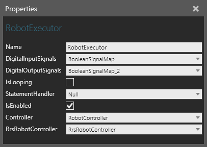

A Robot Executor allows you to read, write and execute a robot program.

| Name | Description |
| Name | Defines the name of the executor. |
| DigitalInputSignals | Defines the Boolean Signal Map behavior used for managing the executor's inputs. |
| DigitalOutputSignals | Defines the Boolean Signal Map behavior used for managing the executor's outputs. |
| IsLooping | Defines if the executor loops its program. |
| StatementHandler | Defines a Python Process Handlers used to override or modify statements in robot program and execute process statements. |
| IsEnabled | Turns on/off the execution of its program. |
| Controller | Defines the Robot/Servo Controller used by the executor to
generate motion statements in its program.
If a Servo Controller, you can generate joint-type motions but not linear motions. If a Robot Controller, you can generate both joint and linear motions. |